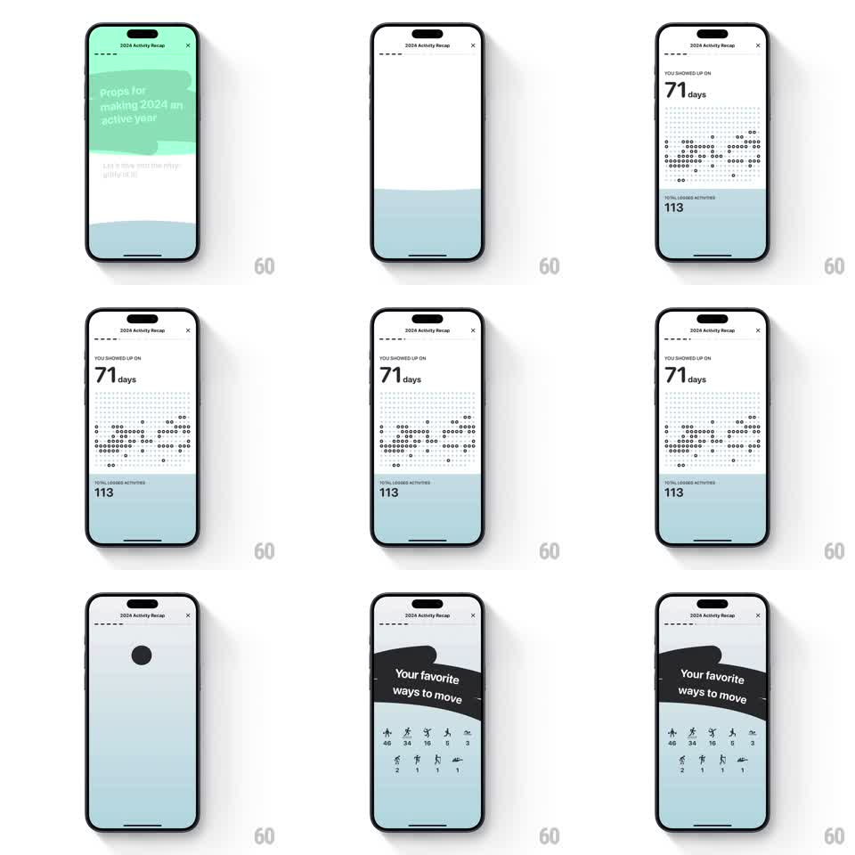

Media
Frame-by-frame

Rebuild this animation 1:1: Gentler Streak's consistency recap - a dot-matrix year graph fills in dot by dot, then a sticker slide introduces the favorite activities grid.

Rebuild this animation 1:1: Gentler Streak's consistency recap - a dot-matrix year graph fills in dot by dot, then a sticker slide introduces the favorite activities grid. ## Integration Integration: stack-agnostic spec - springs given as stiffness/damping, timed motions as duration + curve; map every value to your framework and animation library of choice. ## Scene White over pale-blue banded screen: "YOU SHOWED UP ON" kicker, a huge "71 days", a year graph rendered as a grid of small dots (filled for active days), and "TOTAL LOGGED ACTIVITIES - 113" below. Second card: a tilted black sticker "Your favorite ways to move" over a two-row grid of activity icons with counts (46, 34, 16, 5, 3 / 2, 1, 1, 1). ## Motion spec Pattern: dot-by-dot fill with sticker reveal, ~2.5s. - Bands slide in (green-tinted top, pale blue bottom, 300ms each), kicker and "71 days" fading up (300ms). - The dot graph fills in reading order: each active-day dot pops to full opacity (40ms per dot, fast cascade across the grid), inactive dots staying at 15% opacity. - The totals line fades in as the cascade finishes (250ms). - Transition: the sticker "Your favorite ways to move" whips in from the left at a tilt (spring stiffness 320 damping 15) as the background shifts. - The activity grid pops in icon by icon (scale 0.6 to 1, stiffness 380 damping 15, 50ms stagger, row by row), counts fading in under each. ## Calibration - The dot cascade is quick enough to read as a wave, slow enough to see it travel. - The sticker lands after the graph completes - it narrates the finished data. ## Reduced motion Graph fades in filled; grid fades in. ## Don't miss - Filled and empty dots share the grid - the empty days are visible, not removed. - The grid's counts vary wildly (46 down to 1); keep the uneven numbers.